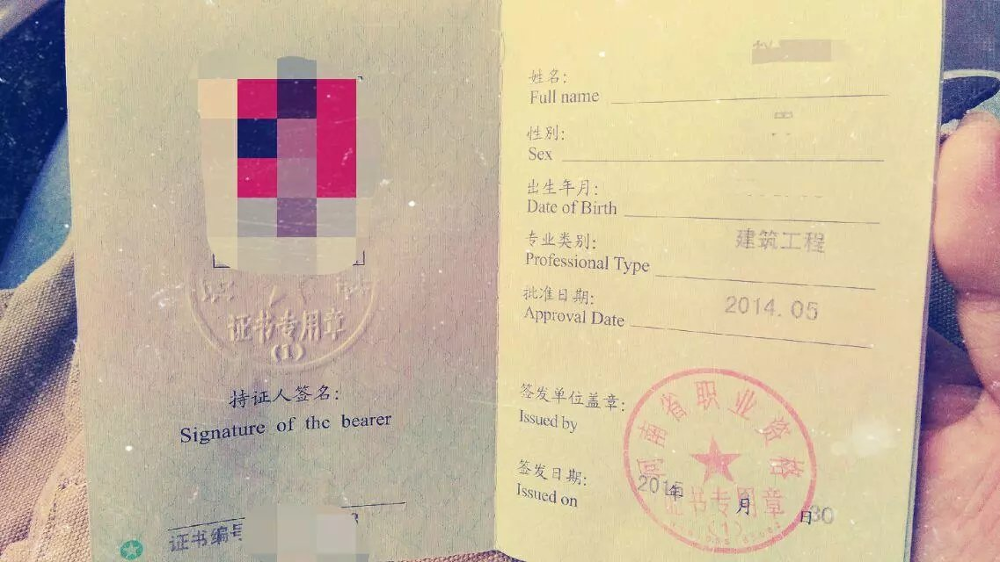
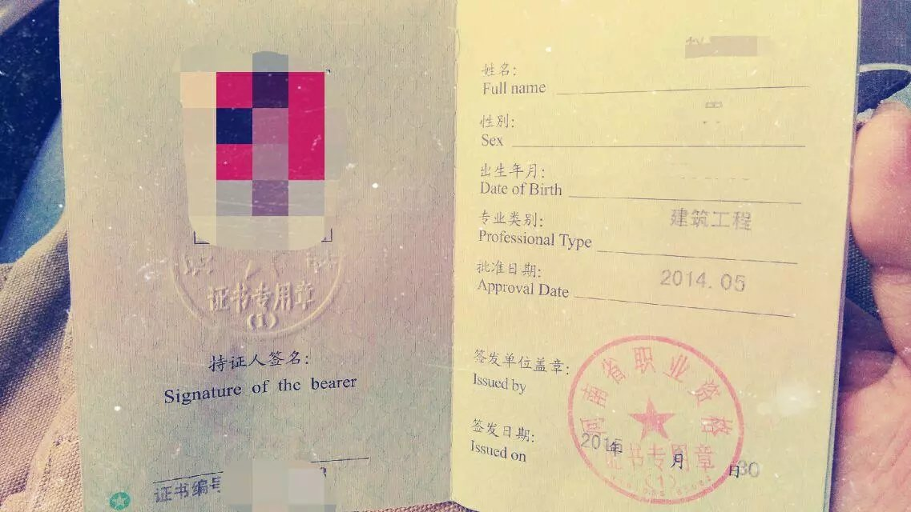

Contact Me
You can contact me using this email address longluv@live.cn.
赵艺龙 男 24岁 金牛座 177cm 177-3769-1816
英语专业，并且考取了二级注册建造师、证券从业资格证
- 技能：英文口语、Linux部署、H5制作、SQL基础查询、Axure/Xmind。
- 爱好：吉他、画画、电影、养花草宠物
- 特长：溜冰、游泳、摄影

You can contact me using this email address longluv@live.cn.
赵艺龙 男 24岁 金牛座 177cm 177-3769-1816
英语专业，并且考取了二级注册建造师、证券从业资格证
